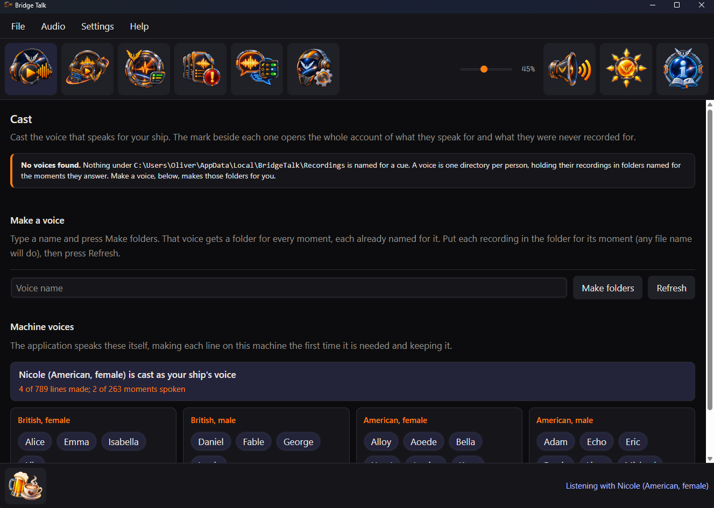

Bridge Talk
A ship's voice for Elite Dangerous
Pick one of 28 ready-made voices and your ship starts talking back as you play: docking, jumps, fuel, heat and danger. Or record a voice of your own, one line for every moment.
Free for Windows and Linux · waits quietly out of the way · talks, never listens

What your ship might say
A few of the lines the ready-made voices speak. Every moment has three to choose from.
Docking granted
We're cleared to land, commander.
Arriving in a new system
New system, commander.
Dropping out by a star
Right by the star. Mind the heat.
Reaching a planetary ring
We're in the ring. Watch the rocks.
Running low on fuel
We're running short on fuel, commander.
Coming under fire
Incoming fire, commander.
Supporting Bridge Talk
Bridge Talk is free and stays free. There is no paid tier, no licence key and no feature held back behind a donation. If it has made your ship better company, a contribution supports its maintenance and continued development.
 Donate
Donate